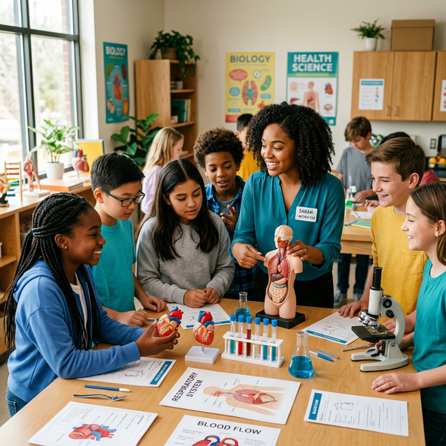

We bring engaging, age-appropriate health literacy programs to students in grades 4–8 — sparking curiosity and building healthy habits that last.

Community Health Bridge provides interactive educational sessions for grades 4–8 that introduce foundational health and biology concepts in engaging, accessible ways.
Our programs combine demonstrations, discussions, and activities to create meaningful learning experiences that extend beyond the classroom.
Sessions designed to engage and inspire young minds through science and health.
Core programs designed with intention, built for impact.
Hands-on workshops introducing medical and biological concepts through interactive demonstrations.
Students learn about nutrition, sleep, exercise, and hygiene — habits that shape long-term health.
Programs delivered through schools, libraries, and youth organizations to reach students where they are.
Introducing healthcare careers and scientific fields — opening doors students may not have considered.